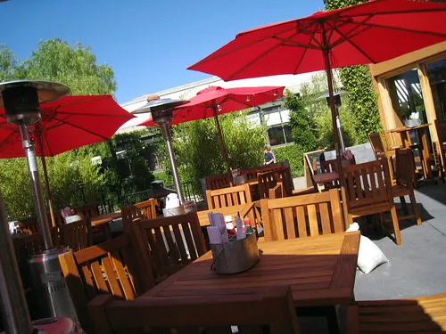

Best Patio In Vancouver
Vancouver's known for a lot of things -- fun patios where you can drink beer outdoors isn't one of them. If you know of any patios in Vancouver, drop a comment. My favourite patio is the Kingston pub on Richards I believe. They also make pretty darn good nachos.

So, what's your favourite patio in the city, and why do you like it?